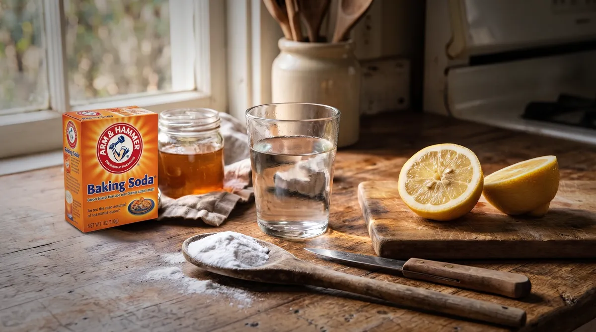

From the old farm kitchen
The Baking Soda Trick Men Over 40 Are Trying Before Bed

There's probably a box of baking soda in your kitchen right now. Our grandparents used it for almost everything.
Now men across America are talking about one simple way to use it at night, mixed with a couple of things most of us already have at home.
We put the full step-by-step in a short free video.
- Takes less than a minute
- Uses simple things from your kitchen
- Explained step by step, in plain English
Free to watch · No sign-up needed